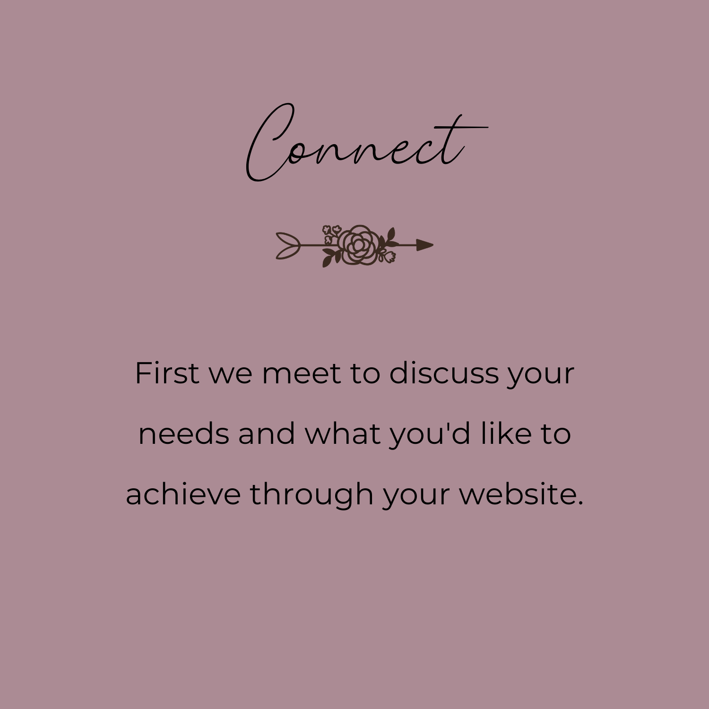
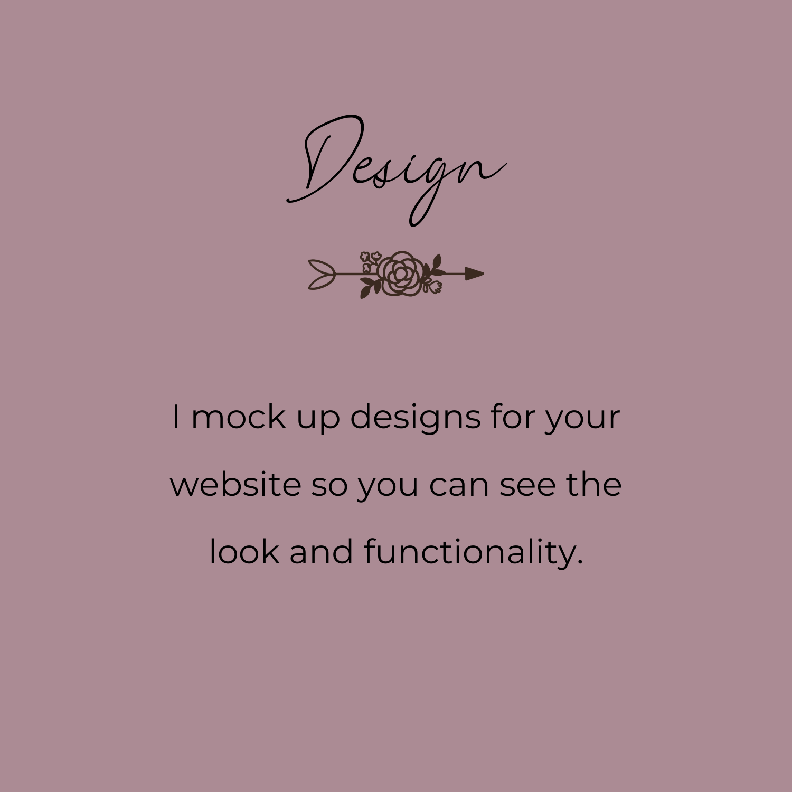

I'm a developer focused on creating beautiful, accessible and functional websites.
Background
I'm a former health researcher and professor looking to help make the world a better place...one website at a time.
When I'm not programming, I enjoying digital painting, playing piano, doing yoga, enjoying nature, and spending time with my famiily.
Goals
I am a life-long learner dedicated to learning new technology, including:
- HTML
- CSS
- JavaScript
- Ruby
- Python
- SQL
I’m particularly interested in working with organizations dedicated to improving health and enhancing social justice.
My Process
 